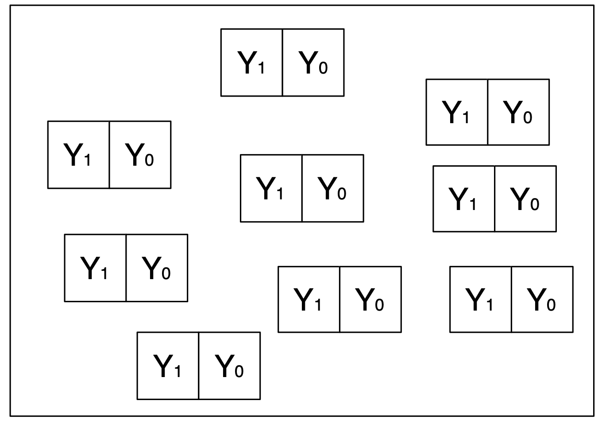
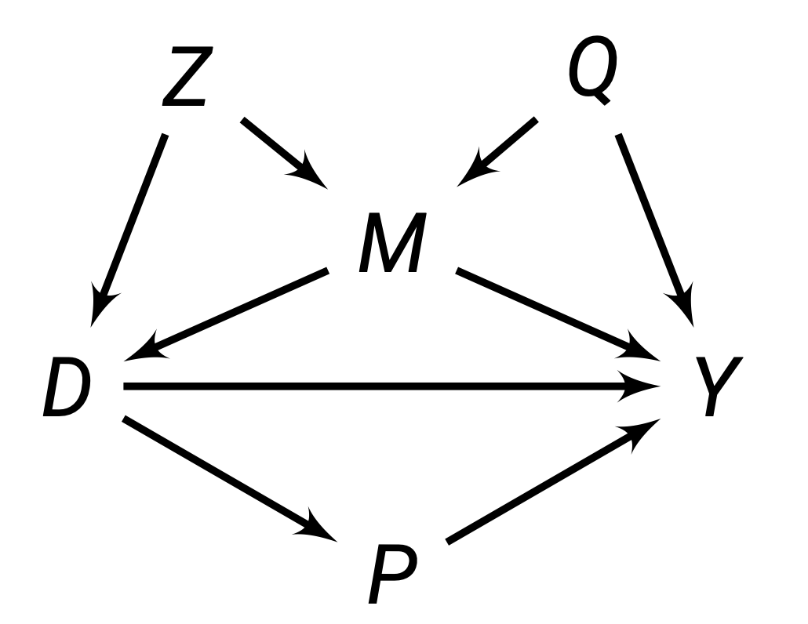

library(ggdag)
library(dagitty)Causal Frameworks
Chapter 4, Quantitative Methods (Causal Inference)
In the past few chapters, we have focused on correlations.
This chapter introduces the main causal frameworks (potential outcomes, causal graphs), the main causal estimands used in causal inference, and the idea of selection bias and confounders. This chapter is the foundation in which the next set of methods for causal inference will be built on.
Use the right sidebar for quick navigation. R-code for causal diagrams is provided at the bottom.
Potential Outcomes Framework
Treatment Variable
In causal inference, we are interested in how treatment \(D\) causes outcome variable \(Y\).
\(D\) is our treatment variable. The indicator of treatment for each unit \(i\) is \(D_i\).
\[ D_i = \begin{cases} 1 \quad \text{if unit } i \text{ recieved the treatment} \\ 0 \quad \text{if unit } i \text{ did not recieve the treatment} \end{cases} \]
Causal variables/treatments must occur before the outcome. A variable cannot cause something to occur in the past.
Causal variables/treatments must be able to be manipulated (in order to imagine a world where the treatment did not occur). For example, \(D\) cannot be sex assigned at birth, ethnicity, etc. For example, major global events (how did 9/11 cause the Arab spring?)
Potential Outcomes
Imagine there are two hypothetical parallel worlds - one where unit \(i\) receives the treatment \(D\), and one where unit \(i\) does not receive the treatment \(D\). Everything else in these worlds is identical.
Potential Outcomes for unit \(i\) are denoted:
\[ Y_{di}, Y_i(d) =\begin{cases} & Y_{1i}, \ Y_i(1) \quad \text{Outcome for unit } i \text{ when } D_i = 1 \\ & Y_{0i}, \ Y_i(0) \quad \text{Outcome for unit } i \text{ when } D_i = 0 \\ \end{cases} \]
For example, imagine we are interested in finding the effect of democracy \(D\) on GDP growth \(Y\). Potential outcome \(Y_{1i}\) is the potential GDP growth of country \(i\) if they were a democracy, and outcome \(Y_{0i}\) is the potential GDP growth of a country \(i\) if they were not a democracy.
Note that these are hypothetical worlds - we will obviously not observe both of them at the same time. The next section discusses this.
Observed Outcomes and “Missing Data”
Of course, there is not two parallel worlds with 2 potential outcomes. In the real world, each unit \(i\) either receives treatment \(D\), or does not. We do not observe the other potential outcome.
\(Y_i\) is the observed outcome for unit \(i\). This is given by formula:
\[ Y_i = D_i \cdot Y_{1i} + (1-D_i) \cdot Y_{0i} \]
If we plug in \(D_i = 0, 1\) to the equation above, we get the observed outcomes:
\[ Y_i = \begin{cases} Y_{1i} \quad \text{if } D_i = 1 \\ Y_{0i} \quad \text{if } D_i = 0 \\ \end{cases} \]
Before the treatment (A priori), both potential outcomes could be observed. After the treatment, one is observed, and the other is counterfactual. For any given experiment, only one will ever be seen, and the counterfactual will never be seen (missing data problem).
Neyman Urn Model
Potential Outcomes can be visualised with the Neyman Urn Model.
Before the treatment, we have a box (we cannot see) with both potential outcomes.

Then, when we apply treatment, we stick our hand into the box that we cannot see, and pull out one observed outcome.

We are essentially sampling from potential outcomes to get observed outcomes.
This missing data problem is called the fundamental problem of causal inference.
Stable Unit Treatment Value Assumption
The above given observed and potential outcome frameworks depends on the Stable Unit Treatment Value Assumption (SUTVA).
\[ \begin{align} Y_{(D_1, D_2, \dots, D_N)i} & = Y_{(D_1', D_2', \dots, D_N')i} \\ Y_{di} \text{ under current randomisation} & = Y_{di} \text{ under all other randomisations} \end{align} \]
Or more intuitively, the potential outcomes of unit \(i\) only depends on their own treatment status, and no other unit’s treatment status. Thus, changing everyone else’s treatment status has no effects on unit \(i\)’s potential outcomes \(Y_{di}\). The treatment is also the same for everyone (treatment is stable and consistent)
Examples of SUTVA Violations
Spill-over effects: If we are testing a new curriculum, one student \(j\) getting the new curriculum may teach their friend \(i\) the new curriculum, thus affecting the potential outcomes of \(i\).
Contagion: If we are studying a disease, diseases can spread, so another unit \(j\) getting a disease affects the potential outcomes of unit \(i\).
Dilution: If we are studying vaccines - there is herd immunity - other people getting the vaccine also reduces our chances of getting the disease.
Variable levels of treatment: If we are doing a drug trial, if some people got two doses, while others only got one dose. This is not a consistent treatment.
Technical errors: If someone who is supposed to be treated accidentally is not treated. This is not a consistent treatment.
When SUTVA is violated, potential outcomes become very messy, and we no longer have the neat framework as before.
Causal Estimands
Individual Treatment Effect
Remember the potential outcomes from parallel worlds \(Y_{1i}\) and \(Y_{0i}\).
Since these two parallel worlds are identical except for the fact one receives the treatment \(D\) and the other does not, the causal effect of \(D\) should be the difference between the potential outcomes of these two worlds. Thus, the individual treatment effect of a unit \(i\) is:
\[ \tau_i = Y_{1i} - Y_{0i} \]
This is the specific treatment effect for a specific unit \(i\). This cannot be observed, because we do not see both potential outcomes for the same unit \(i\).
This is also very hard to estimate, as we cannot reliably fill in the missing potential outcome for any one unit \(i\). Thus, we almost never use individual treatment effects, and use group treatment effects.
Average Treatment Effect (ATE)
ATE is a group-level causal estimand.
Group-Level Causal Estimands
Consider a population of units \(i = 1, \dots, N\).
The population has potential outcomes represented in two (only partially observed) vectors:
\[ \begin{split} & Y_1 = (Y_{11}, Y_{12}, \dots, Y_{1N}) \\ & Y_0 = (Y_{01}, Y_{02}, \dots, Y_{0N}) \end{split} \]
We compare these two vectors of potential outcomes. The most common way to do this is to use their expected values.
The Average Treatment Effect is defined as:
\[ \begin{split} \tau_{ATE} & = E(Y_{1i} - Y_{0i}) \\ & = \underbrace{\frac{1}{N} \sum\limits_{i=1}^N (Y_{1i} - Y_{0i})}_{\text{a formula for average}} \end{split} \]
We cannot calculate this with observed data - since we need all potential outcomes to do this. We can estimate this (covered throughout this course).
Average Treatment Effect on the Treated (ATT)
An alternative estimand to the ATE is the Average Treatment Effect on the Treated (ATT):
\[ \begin{split} \tau_{ATT} & = E(Y_{1i} - Y_{0i} \ | \ D_i = 1) \\ & = \underbrace{\frac{1}{N_1} \sum\limits_{i=1}^N D_i (Y_{1i} - Y_{0i}) \quad \text{where } N_1 = \sum\limits_{i=1}^ND_i}_{\text{a formula for the average only for treated units}} \end{split} \]
This is the causal effect of only units who have received the treatment. Note that frequently the ATT is not equal to the ATE, so be aware of which estimand you are trying to estimate/identify.
ATT vs. ATE
When does \(\tau_{ATT} = \tau_{ATE}\)?
- When the expectation of the potential outcomes of both the treated and control are the same, then the two equal each other.
The opposite is also true: if the expectation of the potential outcomes of both the treated and control are different, then the two are not equal.
The opposite estimand is the Average Treatment effect on the Untreated (ATU), which only measures the causal effect of units who did not recieve the treatment.
This is not used very often, since it is kind of uninituive to think about treatment effects on individuals who did not recieve treatment. However, it can be useful in understanding identification assumptions.
Conditional Average Treatment Effect (CATE)
The conditional average treatment effect is any treatment effect where there is a condition on a characteristic/covariate:
\[ \tau_{CATE}(x) = E(Y_{1i} - Y_{0i} \ | \ \underbrace{X_i = x)}_{\text{condition}} \]
This is the causal effect of only variables who meet the condition of the covariate specified. For example, you could find the conditional average treatment effect of only women (so the covariate which we are conditioning on is gender). You can also condition on multiple covariates.
This is often used for tailoring products/medicine/advertising to certain groups of people. It is also frequently used in identification strategies.
This estimand will go by other names, including the Local Average Treatment Effect (LATE).
Selection Bias and Confounders
Naive Estimator and Selection Bias
A natural way to estimate the ATE is to use a naive estimator: find the average difference of observed outcomes. This is called the naive estimator:
\[ \hat\tau_{naive} = \underbrace{E(Y_i|D_i = 1)}_{\text{for treated}} - \underbrace{E(Y_i|D_i = 0)}_{\text{for control}} \]
However, there is an issue - we can show this with algebra:
\[ \begin{align} \hat\tau_{naive} & = E(Y_i|D_i = 1) - E(Y_i|D_i = 0) \\ & = \underbrace{E(Y_{1i}|D_i = 1) - E(Y_{0i} | D_i = 0)}_{\because \text{ observed potential outcomes}} \\ & = E(Y_{1i}|D_i = 1) - E(Y_{0i} | D_i = 0) + \underbrace{E(Y_{0i}|D_i = 1) \color{red}{- E(Y_{0i}|D_i = 1)}}_{\because \text{ this equals 0, so we can add it}} \\ & = \underbrace{E(Y_{1i}|D_i = 1) \color{red}{- E(Y_{0i}|D_i = 1)}}_{\tau_{ATT}} + \underbrace{E(Y_{0i}|D_i = 1) - E(Y_{0i} | D_i = 0)}_{\text{Selection Bias}} \\ \end{align} \]
We can see that our naive estimator produces the \(\tau_{ATT}\) plus an extra bit (called the selection bias). Thus, our naive estimator is biased, so we should be careful about using this naive estimator (correlation does not equal causation).
Naive Estimator Biased for ATU
The proof above shows how the naive estimator is a biased estimator for the \(\tau_{ATT}\). We can also prove it is a biased estimator of the ATU:
\[ \begin{split} \hat\tau_{naive} & = E(Y_i|D_i = 1) - E(Y_i|D_i = 0) \\ & = \underbrace{E(Y_{1i}|D_i = 1) - E(Y_{0i} | D_i = 0)}_{\because \text{ observed potential outcomes}} \\ & = E(Y_{1i}|D_i = 1) - E(Y_{0i} | D_i = 0) + \underbrace{E(Y_{1i}|D_i = 0) - E(Y_{1i}|D_i = 0)}_{\because \text{ this equals 0, so we can add it}} \\ & = \underbrace{E(Y_{1i}|D_i = 0)- E(Y_{0i}|D_i = 0)}_{\tau_{ATU}} + \underbrace{E(Y_{1i}|D_i = 1) - E(Y_{1i} | D_i = 0)}_{\text{Selection Bias}} \\ \end{split} \]
Naive Estimator Biased for ATE
The proofs above shows how the naive estimator is a biased estimator for the \(\tau_{ATT}\) and \(\tau_{ATU}\). We can also prove it is a biased estimator of the ATE.
Let us first start with the ATE. Let us call \(Y_{1i} - Y_{0i} := \tau_i\) for notation simplicity:
\[ \begin{align} \tau_{ATE} & = E(Y_{1i} - Y_{0i}) = E(\tau_i)\\ & = \underbrace{E(\tau_i|D_i = 1)Pr(D_i = 1) + E(\tau_i|D_i = 0)Pr(D_i = 0)}_{\because \text{ weighted average of ATE and ATU by proportion}} \\ & = E(\tau_i|D_i = 1) \underbrace{(1 -Pr(D_i = 0))}_{\because \text{ complement prob.}} + E(\tau_i|D_i = 0)Pr(D_i = 0) \\ \end{align} \]
Let us call \(Pr(D_i = 0) := \pi\) for notation simplicity. Now, continue:
\[ \begin{split} & = \underbrace{E(\Delta|D_i = 1) - \pi E(\Delta|D_i = 1)}_{\because \text{ distribute out}} + E(\tau_i|D_i = 0)\pi \\ & = E(\tau_i|D_i = 1) + \underbrace{\pi[E(\tau_i|D_i = 0) - E(\tau_i|D_i = 1)]}_{\because \ \pi \text{ factored out }} \\ & = E(Y_{1i} |D_i = 1) - E(Y_{0i}|D_i = 1) + \pi[E(\tau_i|D_i = 0) - E(\tau_i|D_i = 1)] \\ \end{split} \]
Let us call the part \(\pi[E(\tau_i|D_i = 0) - E(\tau_i|D_i = 1)] := \Pi(\tau_i)\). Now, continue to simplify:
\[ \begin{split} & = E(Y_{1i} |D_i = 1) - E(Y_{0i}|D_i = 1) + \Pi(\tau_i) + \underbrace{E(Y_{1i} |D_i = 0) - E(Y_{0i}|D_i = 0)}_{\because \text{ these two cancel out so we add 0}} \\ & = E(Y_{1i} |D_i = 1) - E(Y_{0i}|D_i = 0) + E(Y_{1i} |D_i = 0)- E(Y_{0i}|D_i = 1) + \Pi(\tau_i) \\ & = \underbrace{E(Y_i|D_i = 1)}_{\because \text{ observed outcome}} - \underbrace{E(Y_i|D_i = 0)}_{\because \text{ observed outcome}} + E(Y_{1i} |D_i = 0)- E(Y_{0i}|D_i = 1) + \Pi(\tau_i) \\ & = \underbrace{E(Y_{i} |D_i = 1) - E(Y_{i}|D_i = 0)}_{\hat\tau_{naive}} + E(Y_{1i} |D_i = 0)- E(Y_{0i}|D_i = 1) + \Pi(\tau_i) \\ & = \hat\tau_{naive}+ E(Y_{1i} |D_i = 0)- E(Y_{0i}|D_i = 1) + \Pi(\tau_i) \end{split} \]
Thus, we can see that \(\tau_{ATE}\) is not equivalent to \(\hat\tau_{naive}\). Let us isolate \(\hat\tau_{naive}\) to identify the selection bias.
\[ \begin{split} & \tau_{ATE} = \hat\tau_{naive}+ E(Y_{1i} |D_i = 0)- E(Y_{0i}|D_i = 1) + \Pi(\tau_i) \\ & -\hat\tau_{naive} = -\tau{ATE} + E(Y_{1i} |D_i = 0)- E(Y_{0i}|D_i = 1) + \Pi(\tau_i) \\ & \hat\tau_{naive} = \tau_{ATE} - E(Y_{1i} |D_i = 0) + E(Y_{0i}|D_i = 1) + \Pi(\tau_i) \\ & \hat\tau_{naive} = \tau_{ATE} + \underbrace{E(Y_{0i}|D_i = 1)- E(Y_{1i} |D_i = 0) + \Pi(\tau_i)}_{\text{selection bias}} \end{split} \]
Confounders
Take the selection bias formula from above:
\[ \underbrace{E(Y_{0i}|D_i = 1)}_{Y_{0i}\text{ (treated)}} - \underbrace{E(Y_{0i} | D_i = 0)}_{Y_{0i}\text{ (control)}} \]
If selection bias is non-zero, this essentially states that the expected potential outcome before treatment \(Y_{0i}\) between the treatment and control groups is not equal.
Or in other words, the treatment and control groups have some other variable causing differences even before treatment has begun. This implies that the differences between the treatment and control group may not be due to treatment \(D\), but due to the underlying differences before treatment even occurred.
Confounders are variables that cause the differences between treatment and control groups before the treatment has started. Confounders correlate with both the treatment variable and the outcome. If a variable only correlates with \(D\) or \(Y\), then it is not a confounder. If must correlate with both \(D\) and \(Y\).
This is why correlation does not equal causation - if the treatment and control group are different before we start the experiment, we cannot say the difference between the two is purely a result of treatment \(D\).
We can also think about confounders in terms of omitted variable bias. The formula for omitted variable bias is:
\[ E(\hat{\boldsymbol\beta}) = \boldsymbol\beta + \boldsymbol{\pi \delta} \]
Where \(\boldsymbol\beta\) are the true population parameters, \(\boldsymbol\pi\) is the relationship between the confounder and treatment, and \(\boldsymbol\delta\) is the relationship between confounder and outcome.
We can see that if either \(\boldsymbol\pi = 0\) or \(\boldsymbol\delta = 0\), then there is 0 omitted variable bias - which implies that a confounder that causes bias must be correlated with both the treatment and outcome.
Assignment Mechanism
The Assignment Mechanism is the procedure that determines the treatment status of each unit. In causal inference, we want to restrict the assignment mechanism, in order to remove the effect of selection bias.
There are two types of studies that use different assignment mechanisms:
- Randomisation Experiments: The assignment mechanism is both known, and controlled by the researcher. Generally, the researcher chooses some type of randomisation.
- Observational Studies: The assignment mechanism is not known to, or not under the control of the researcher. This means that confounders may be driving selection into treatment and control, inducing bias.
Generally, the most credible studies are randomisation studies, since we can control interventions to parse out the effect of confounders. Observational studies generally rely on more assumptions that need to be met, and need to be defended for the study to be credible.
In the next chapter, we will start off with Randomised Controlled Trials, which are a form of randomisation experiment. After that, we will start discusses observational studies, and what assumptions we need in these studies to identify the causal effect without selection bias.
Directed Acyclic Graphs
Components of the Graphs
Causal Diagrams are a visual way to represent causal theories and frameworks, which allows us to visualise how variables interact with each other. Each Directed Acyclic Graph (DAG) has the following components:
- Nodes: representing variables (which are also called vertices).
- Directed Edges: Arrows that encode one-way causal theories between variables. For example, we might believe \(Z\) causes \(X\), so we will draw an arrow from \(Z\) to \(X\). These connections are observable (solid) or unobservable (dashed).

In the figure above, we have two unobserved variables: \(Q\) and \(Y\) We have three observed variables: \(Z\), \(D\), and \(Y\). We can see the causal theories represented by arrows.
We can see the causal effec \(Z \rightarrow Y\) is confounded by \(W\): \(W\) is affecting who gets treatment \(Z\), and causing \(Y\). Thus, \(W\) is affecting who gets selected into treatment \(Z\), and selecting your potential outcome \(Y\). Thus, this is an example of selection bias. \(D \rightarrow Y\) is confounded by \(Q\). \(Z \rightarrow D\) is not confounded, so we can estimate this causal effect.
Representing Interventions
Treatments (interventions by the researcher, for example) are when we determine one variable exogenously (such as by randomisation). Or in other words, one variable is determined randomly externally, not caused by any variables within the directed acyclic graphs.
Treatments are represented by the do() operator. When the treatment is exogenous, we can break all the connections into that variable’s node. This is because we are determining the value of the variable, not any other variables.

An intervention here is on variable \(D\). That means the value of \(D\) is being chosen outside of this graph (by randomisation, or the researcher). This allows us to delete the arrow between \(Q \rightarrow D\) and \(Z \rightarrow D\). This is because we are exogenously determining \(D\), so \(Q\) and \(Z\) are not determining the value of \(D\).
With exogenously determined variables, we can find the causal effect that variable is causing on another.
Blocked Paths
A set of nodes \(\{ \mathbf S \}\) blocks a path \(p\) if either:
- If the path \(p\) contains at least one arrow-emitting node included in the set of nodes \(S\), or
- The path \(p\) contains at least one collision node (multiple arrows point into it) that is outside the set of nodes \(S\), and the collision node has no descendant within the set of nodes \(S\) (no arrows go out of it to another node).

Take this above causal diagram. We can see the following:
- The path \(D \rightarrow P \rightarrow Y\) is blocked by set \(\{P\}\), because node \(P\) is one arrow-emitting node in the path \(D \rightarrow P \rightarrow Y\).
- The path \(D \leftarrow M \rightarrow Y\) is blocked by set \(\{M\}\), because node \(M\) is one arrow-emitting node in the path \(D \leftarrow M \rightarrow Y\).
- \(D \leftarrow Z \rightarrow M \rightarrow Y\) is blocked by \(\{M\}\), \(\{Z\}\), or \(\{M, Z\}\).
Blocking paths is important, since in order to estimate \(D \rightarrow Y\), we need to block any other path between \(D\) and \(Y\) that is not directly \(D \rightarrow Y\).
Implementation in R
This section will show how you can create DAGs in R. We will need the ggdag and dagitty packages.
Simple DAGs with Dagify
You can create a very simple DAG with dagify as follows:
dag_object <- dagify(
Y ~ X + D, #Y is caused by X and D
D ~ X #D is caused by X
)
ggdag(dag_object) + theme_dag()This dag is not very customisable. This can be an issue if you want nodes to be in a specific location. See below for a more customisable DAG.
Custom DAGs with Dagitty
You can create more complex DAGs with Dagitty. Dagitty allows us to position nodes in a coordinate system, which is useful in some purposes.
dag_object <- dagitty('dag {
D [pos = "0, 1"]
Y [pos = "2, 1"]
X [pos = "1, 2"]
D -> Y
D <- X -> Y
}')
ggdag(dag_object) + theme_dag()The pos arguments have the coordinates of where you want to put each node.
Below are the path connections, where you can use -> and <- to indicate relationships.